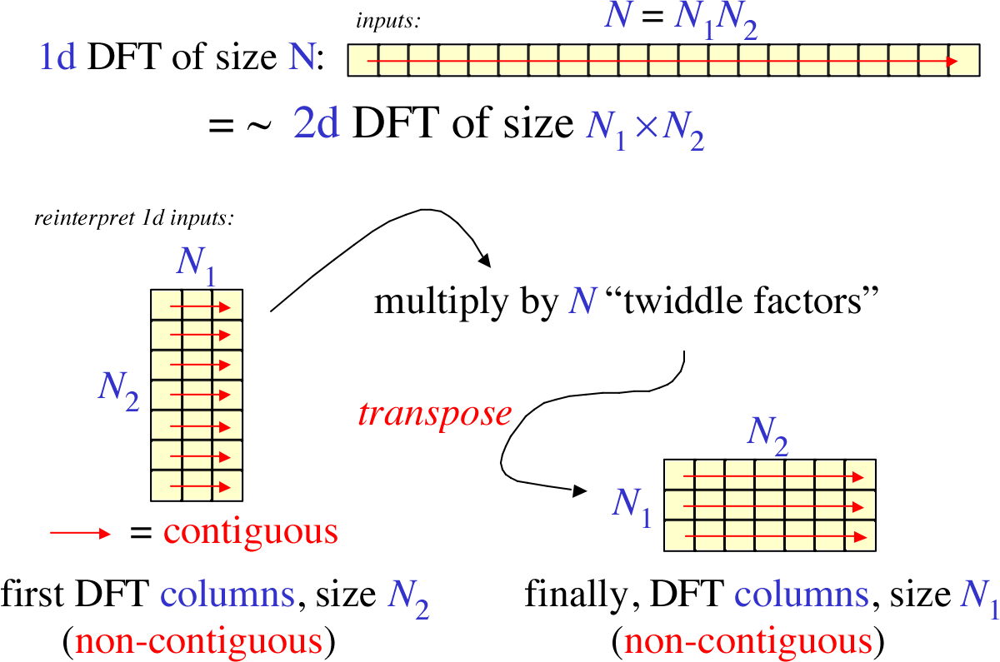
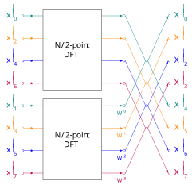
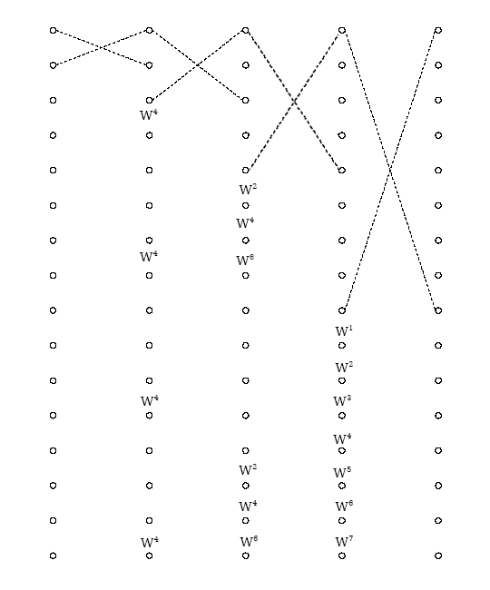
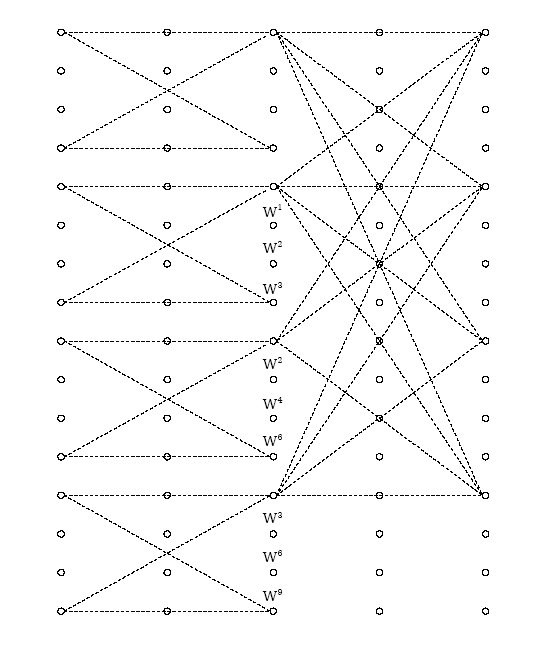
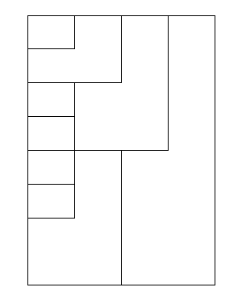
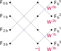
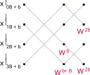
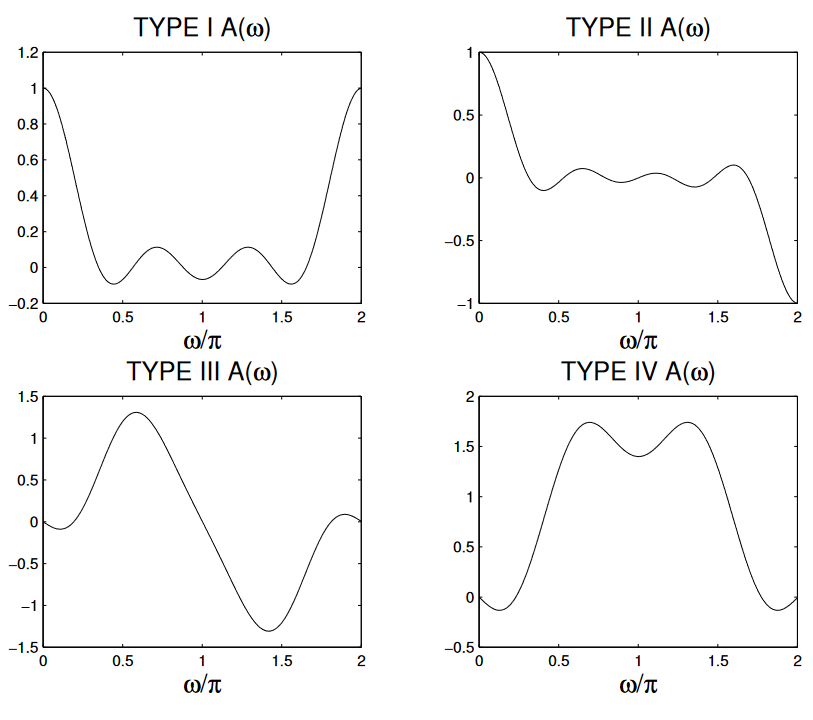

数字信号处理¶
§3 离散 Fourier 变换¶
Fourier 参数之间的关系¶
2022年8月31日，2022年12月4日。
→ FourierTransform、InverseFourierTransform 文档的“更多信息和选项”。
| 场景 | \(a\) | \(b\) |
|---|---|---|
| 现代物理 | \(0\) | \(1\) |
| 经典物理 | \(-1\) | \(1\) |
| 纯数学、系统工程 | \(1\) | \(-1\) |
| 信号处理 | \(0\) | \(-2\pi\) |
记 \(T(k)\) 为
可知 \(\forall \lambda>0,\ T(\lambda k) = T(k) / \lambda\)。
又，开头两式化为 \(\mathcal{F} = \sqrt{\abs{b} / \qty(2\pi)^{1-a}}\ T(b)\)，\(\mathcal{F}^{-1} = \sqrt{\abs{b} / \qty(2\pi)^{1+a}}\ T(-b)\)，即
因此
等差比数列¶
2022年9月30日，2022年12月3日。
（\(q \neq 1\)）
等比数列¶
2022年12月3日。
\(a \neq b\) 则
\(\tau \in \Z / 2\)，\(N = 2\tau + 1 \in \Z\)，则
注意，\(\tau \in \Z + \frac12\) 时这不是严格的 DTFT，\(4\pi\) 才是最小正周期。
对偶关系¶
2022年10月1日。
DFT的间隔与总长.nb
| 一个域 | 另一域 |
|---|---|
| 周期 | 离散 |
| 混叠 | 疏松 |
| 非周期 | 连续 |
| 补零 | 细致 |
补零相当于增大最小正周期，减弱周期性。细致相当于增强连续性。混叠、疏松同理。
| 一个域 | 另一域 |
|---|---|
| 插零 | 重复 |
时域插零相当于减小 \(T\) 而 \(t_p\) 不变。
第二行是第一行的 \(N\) 倍（\(N\) 是点数），对角线之积是一。
- 时域间隔：采样周期。
- 频域间隔：频谱分辨率。
- 时域总长：记录时间。
- 频域总长：无专门名词，等于采样频率。
用 DFT 取样 Z 频域¶
2022年10月12日。
今有 8 点序列 \(x\)，问 \(\eval{X}_{z=0.2\exp(2\pi jk/7)}\)（\(k=1,\ldots,7\)）。要求只用一次 DFT，点数不超过 8。
分析¶
这种取样的频谱分辨率为 \(\frac17\)，所以 DFT 点数只能是 7。
下面试图构造一个 7 点序列 \(y\)，使 \(\eval{Y}_k\) 为所求。
方案：
- 用 \(x\) 计算 \(y\)。
- 计算 \(y\) 的 7 点 DFT。
- 整理一下 \(k\) 的顺序。
代入¶
flowchart LR
subgraph 时域
x -.->|?| y
end
subgraph 频域
X --> Y
end
x --- X
y --- Y注意题目给定了 \(X, Y\) 关系，我们需要确定 \(x,y\) 关系。那么可走 \(x \mapsto X \mapsto Y \mapsto y\) 这一圈试试。
从后往前代入，首先是 \(Y \mapsto y\)：
- “\(k:N\)”表示 \(k \in [0,N) \cap \Z\)。
- \(W = \exp(-2\pi j /7)\)。
代入 \(X \mapsto Y\)：
再代入 \(x \mapsto X\)（Z 变换）：
交换求和顺序，得
整理¶
下面考虑 \(\frac17\sum_k W^{k(m-n)}\)。回忆一下，\(\xi \in \Z\) 时，
这里 \(\xi = m-n\)，可能是哪种情况？注意 \(m:8\)，\(n:7\)，所以 \(m -n \in [0-(7-1),\ (8-1)-0] \cap \Z = [-6,7] \cap \Z\)，而 \([-6,7] \cap \qty(7\Z) = \qty{0, 7}\)，故
代回 \(x \mapsto y\) 那个式子，得
而 \(x\) 只有 8 点，于是
内插¶
2022年11月24日，2022年12月3日。
由 \(\eval{X}_k\) 内插回 \(\eval{X}_z\)：
若只考虑 DTFT，还可进一步化简；不过不如重新考虑，除非你能想起来 \((e^{j\omega_k}/z)^N = z^{-N}\)。
这一过程针对离散信号，并且其时域有限（最多在 \([0,N) \cap \Z\) 有值）。
- 频域取样就是
其中 \(k \in [0,N) \cap \Z\)，\(\omega_k = \frac{2\pi}{N} k\)，\(\delta\) 省略了 \(2\pi\) 的周期化。
这在时域相当于 \(N\) 的周期化。
-
恢复相当于只保留时域主值序列，即乘 \(R_N\)。
这在频域相当于卷积 \(R_N\) 的频谱（如下），再除以 \(N\)。
其中 \(2\tau + 1 = N\)。
其实
用圆周卷积分段计算长输入与短响应的线性卷积¶
2022年12月7日。
- 重叠相加（overlap add）
利用线性卷积的线性，将输入拆成多段，每一段用圆周卷积补零计算线性卷积。
- 重叠保留（overlap save）
将输出拆成多段，抛弃每一段圆周卷积混叠的部分。
对称序列的圆周卷积¶
2022年12月8日。
在频域考虑类似。
另：若 \(x\) 以 \(2\) 为周期，则只有零频和最高频分量。假如 \(y\) 奇对称，那么 \(Y\) 也奇对称，零频和最高频为零。因此 \(x \circledast y\) 将恒零。
§4 快速 Fourier 变换¶
Reducible, The Fast Fourier Transform (FFT): Most Ingenious Algorithm Ever?, YouTube. (哔哩哔哩)
Cooley–Sande–Tukey 算法¶
2022年11月18日，2022年12月6日。

{kind=link}
记号如下
- 大写字母：常量。
- 衬线体 \(A\)：很多元素组成的张量。
- 无衬线体 \(\mathsf A\)：单个数字。
- 小写字母：变量。
- 拉丁字母 \(a\)：时域。
- 希腊字母 \(\alpha\)：频域。
注：不太区分大写拉丁字母与大写希腊字母，例如 \(A\) 与 \(\Alpha\)。
又注：常见数学常量、函数除外。
DFT 点数 \(N = AB\)，则时域优先排 \(B\) 维度（\(x = aB + b\)），频域优先排 \(A\) 维度（\(\xi = A \beta + \alpha\)）。
在上图中，\(A\) 对应 \(N_2\)、行数、每列长度，\(B\) 对应 \(N_1\)、列数、每行长度。
信号 \(F_x\) 的 DFT 定义为
其中 \(\mathsf{N} \coloneqq \exp(-2\pi j / N)\)，它的上标表示指数。下面的 \(\mathsf{A}, \mathsf{B}\) 同理。
其余上下标表示元素的指标。
注意
\(\mathsf{N}^{N} = \exp(-2\pi j N/N) = 1\)。
\(\mathsf{N}^A = \exp(-2\pi j A/N) = \exp(-2\pi j /B) = \mathsf{B}\)，同理 \(\mathsf{N}^B = \mathsf{A}\)。
代回，得
若删掉旋转因子（twiddle factor）\(\mathsf{N}^{\alpha b}\)（将之替换为一），则上式与二维变换相同。
下面运用交换结合律，把它重组为两次变换。
-
\(F_{ab} \mapsto {F^\alpha}_b = \sum_a \mathsf{A}^{\alpha a} F_{ab}\)
变换时域次要排的 \(A\) 维度。Performs \(B\) DFTs of size \(A\).
-
\({F^\alpha}_b \mapsto {\tilde{F}^\alpha}_b = {F^\alpha}_b \mathsf{N}^{\alpha b}\)
旋转（twiddle），应用于时域、频域优先排的维度 \(b, \alpha\)。
-
\({\tilde{F}^\alpha}_b \mapsto {F_b}^\alpha = {\tilde{F}_b}^\alpha\)
转置。
-
\({F_b}^\alpha \mapsto F^{\beta\alpha} = \sum_b \mathsf{B}^{\beta b} {F_b}^\alpha\)
变换频域次要排的 \(B\) 维度。Performs \(A\) DFTs of size \(B\).
无论 \(A,B\) 哪个维度，都可能被认作基（radix）。哪一域优先要排的维度被认作基，就称作在哪一域抽取（因为这一域那步变换一般点数更多），相应的因子称作蝶形。例如 \(B\) 维度在时域优先排，若 \(B\) 被称作基，则这种算法称作在时域抽取（decimation in time），\(\mathsf{B}^{\beta b}\) 称作蝶形。
decimation 为何以 dec- 开头？其词源很血腥。

data-flow-diagram算法流图¶
2022年12月6日。



N=16 radix-2 (left), radix-4 (middle), and split-radix (right) DIT FFT | Connexions, revised
-
radix-2
- 系数是旋转因子，画在两列蝶形之间也许更科学。
- 这是递归算法，但所有系数都要求换算为 \(W_N\)。每一列系数的指数总是等间隔分布于 \([0, \frac{N}{2})\)。
- 如果系数标在线上，那么出现位置与输入的二进制表示相同。（0 没有，1 有，且可能为 \(W_0\)）
- 序列反序与远距离蝶形的用意相同，因此不可能出现在流图的同一侧。例如 DIT 输入反序，输入一侧便是近距离蝶形。
- 不同列蝶形的线平行时更好看，为此远距离蝶形的宽度要画得大一些。
-
other mixed-radix
- radix-4 中的 4 点变换既可按 DFT 定义（矩阵乘法）处理，也可用 \(2\times 2 = 4\) 的 radix-2 FFT 处理。后者增加的旋转因子中 \(3/4\) 是一，\(1/4\) 是 \(-j\)，都可不计运算量；并且流图与 radix-2 相同，\(N\) 较小时系数也会退化成纯粹的 radix-2。


Radix-2 or -4 to split-radix | data-flow-diagram
-
split-radix
- 流图和 radix-2 相同，可通过移动系数相互转化。
§5 数字滤波器¶
\(\R\) 上的部分分式展开¶
2022年11月27日，2022年12月3日。
CASIO fx-911 的功能
- \(\C\) 上的四则运算。
- 求 \(\R\) 上某点的导数值。
- 解 \(\R\) 上方程。
- 给定 \(\C\) 上含变量的表达式，计算（calculate，CALC）变量取特定值时的值。
- 存储（store，STO）、使用 \(\C\) 上的变量。
以展开下式为例。
-
确定形式
分子、分母都是三次，分母有一个实根、两个虚根。
-
求 \(\triangle\)
\(x \to \infty\) 时：
- 由分解后形式，\(\lim f = \triangle\)。
- 由原始形式，\(\lim f = \qty(2 \times (-1) \times 1) / \qty(0.5 \times 0.81) = -4.938\cdots\)。
故 \(\triangle = -4.938\cdots\)。
-
求 \(\bigcirc\)
\(1 + 0.5 x \to 0\)，即 \(x \to -2\) 时，
- 由分解后形式，\((1+0.5) f \to 0 + \bigcirc + 0 = \bigcirc\)。
-
由原始形式，
\[ \begin{split} (1+0.5)f &= \frac{ 2(1-x) \qty(1 + \sqrt{2} x + x^2) } { 1 - 0.9x + 0.81x^2 } \\ &\to \eval{\frac{(\cdots)}{(\cdots)}}_{x=-2}. \end{split} \]
计算得 \(\bigcirc = 2.157\cdots\)。
-
求 \(\square + \square x\)
延拓到 \(\C\)，则 \(1 - 0.9x + 0.81x^2\) 的根是 \(\frac{0.9}{2\times0.81} \pm \sqrt{\qty(\frac{0.9}{2})^2 - 0.81^2} = 0.556\cdots \pm 0.673\cdots i\)，记作 \(\gamma\) 和 \(\bar\gamma\)。（\(\gamma\) 具体取哪个无所谓）
因为最初 \(f: \R \to \R\)，结合原始形式，这里必为一对共轭虚数 \(\gamma,\bar\gamma\)。
\(1 - 0.9x + 0.81x^2 \to 0\)，即 \(x \to \gamma\) 或 \(x \to \bar\gamma\) 时，
- 由分解后形式，\(\qty(1 - 0.9x + 0.81x^2) f \to \square + \square \gamma\) 或 \(\square + \square \bar\gamma\)。
-
由原始形式，
\[ \begin{split} \qty(1 - 0.9x + 0.81x^2) f &= \frac{ 2(1-x) \qty(1 + \sqrt{2} x + x^2) } { 1+0.5 x } \\ &\to \eval{\frac{(\cdots)}{(\cdots)}}_{x=\gamma, \bar\gamma} \\ &= 3.894\cdots \mp 1.536\cdots i, \end{split} \]记作 \(A\) 和 \(\bar A\)。
因为最初 \(f: \R \to \R\)，这里必为一对共轭复数 \(A,\bar A\)。
因此
可解得
\(\Im{\bar A \gamma}\) 是外积。
线性相位¶
2022年11月29–30日，2022年12月4日。
群时延及相应幅度函数¶
设群时延为 \(\tau\)，则 \(\operatorname{Arg} H = -\omega\tau\)（其实应该再 \(\pm \pi\)）—— \(H = \qty(e^{j\omega\tau}H) e^{-j\omega\tau}\)，其中幅度函数 \(e^{j\omega\tau} H \in \R\)。
群时延其实是 \(-\dv{\omega} \operatorname{Arg} H\)，而不是 \(- \frac{1}{\omega} \operatorname{Arg} H\)。
广义“线性相位”只要求 \(e^{j\omega\tau} H\) 的辐角不随 \(\omega\) 变化，不要求具体是多少。
若抽样转为离散，则最好满足 \(\forall t,\quad \tau + t\in\Z \iff \tau-t\in\Z\)，即 \(\tau \in \Z/2\)。
另外注意，
响应有限长（finite impulse response）时，记长为 \(N\)，则 \(H\) 由 \(1, e^{-j\omega}, e^{-2j\omega}, \ldots, e^{-(N-1)j\omega}\) 构成，可以想见 \(2\tau = N-1\)，不然虚部无法保持抵消。
另：由 \(\eval{h}_{\tau+t} = \eval{h^*}_{\tau-t}\)。
-
\(\tau \in \Z\)，\(N \in 2\Z+1\)
\[ \begin{split} e^{j\omega\tau} H &= \sum_{n=0}^{N-1} \eval{h}_n e^{(\tau-n)j\omega} \\ &= \eval{h}_\tau + \sum_{m=1}^{\tau} \qty( \eval{h}_{\tau-m} e^{mj\omega} + {\color{red} \eval{h}_{\tau+m}} e^{-mj\omega} ) \\ &= \eval{h}_\tau + \sum_{m=1}^{\tau} \qty( \eval{h}_{\tau-m} e^{mj\omega} + {\color{red} \eval{h^*}_{\tau-m}} e^{-mj\omega} ) \\ &= \eval{h}_\tau + \sum_{m=1}^\tau 2 \Re{\eval{h}_{\tau-m} e^{mj\omega}} \\ &\in \R. \end{split} \]
-
\(\tau \in \Z + \frac12\)，\(N \in 2\Z\)
与前一情况类似，只是没有单独的 \(\eval{h}_\tau\) 项。
\[ \begin{split} e^{j\omega\tau} H &= \sum_{m = 1-\frac12}^{\tau} 2 \Re{\eval{h}_{\tau - m} e^{mj\omega}} \\ &\in \R. \end{split} \]
幅度函数的对称性¶
现在讨论一下幅度函数 \(e^{j\omega\tau} H\) 的对称性。
前面已提到它是实函数。
\(e^{j\omega\tau} H\) 的对称性由 \(H\) 和 \(e^{j\omega\tau}\) 的对称性共同决定。
-
\(H\)
-
关于 \(\omega = 0\)
\(h\in\R\) 则共轭对称，\(h \in \R/j\) 则共轭反对称。
-
关于 \(\omega = \pi\)
同上。
\[ \begin{aligned} (-1)^n \eval{h}_n &\leftrightarrow \eval{H}_{\pi+\omega}. \\ (-1)^n \eval{h^*}_{n} &\leftrightarrow \eval{H^*}_{\pi-\omega}. \\ \end{aligned} \]
-
-
\(e^{j\omega\tau}\)
- 关于 \(\omega = 0\) 共轭对称。
-
关于 \(\omega = \pi\)
\(\tau \in\Z\) 则共轭对称，\(\tau \in \Z + \frac12\) 则共轭反对称。
注意 \(2\pi\) 总是 \(H\) 的周期，但不一定是 \(e^{j\omega\tau}\) 的；\(e^{j\omega\tau}\) 只能保证 \(4\pi\) 是它的周期。这是 \(\operatorname{Arg} \pm \pi\) 的多值性导致的。
综合一下，得幅度函数 \(e^{j\omega\tau} H\) 的共轭对称性如下表。
上表中 \(+,-\) 分别表示共轭对称、共轭反对称；\(x/y\) 表示关于 \(\omega=0\) 为 \(x\)，关于 \(\omega=\pi\) 为 \(y\)。
由于 \(e^{j\omega\tau} H \in \R\)，共轭［反］对称就是奇／偶对称。

时域实序列及其零点分布¶
下面讨论两种特殊情况。
-
\(h \in \R\)
\[ \Re{\eval{h}_{\tau - m} e^{mj\omega}} = \eval{h}_{\tau - m} \cos(m\omega). \]最开始的时域条件化为
\[ \eval{h}_{\tau+m} \equiv \eval{h}_{\tau-m}. \]
-
\(h \in \R/j\)
\[ \Re{\eval{h}_{\tau - m} e^{mj\omega}} = \eval{(jh)}_{\tau - m} \sin(m\omega). \]设 \(h' = jh \in \R\)，\(H' = jH\)，则 \(\operatorname{Arg} H' = \frac\pi2 - \omega\tau\)，系统广义线性。
\(\R \to \qty{j}\) 共轭反对称，故 \(H' = jH\) 与 \(H\) 的共轭对称性相反。不过 \(H’\) 对应的幅度函数不再是 \(e^{j\omega\tau}H' \in j\R\)，而是 \(e^{j\omega\tau}H' / j = e^{j\omega\tau}H \in \R\)，与 \(H\) 的相同。
最开始的时域条件化为
\[ \eval{h'}_{\tau+m} \equiv -\eval{h'}_{\tau-m}. \]
下面在 \(Z\) 平面考察零点分布。
以上第二种特殊情况中，\(H' = jH\)，所以其实 \(H'\) 与 \(H\) 的零点一致。
-
由 \(\eval{h}_{\tau+m} = \eval{h^*}_{\tau - m}\)，
\[ z^\tau \eval{H}_z = z^{-\tau} \eval{H^*}_{1/z^*} \]\(\tau \in\Z+\frac12\) 时以上写法不严谨，应从 \(\eval{h}_{n} = \eval{h^*}_{2\tau - n}\) 出发，不过由 \(z = e^{sT}\) 也能说通。
故零点 \(z,\ 1/z^*\) 成对出现。（关于单位圆反演对称）
-
对于以上两种特殊情况
- 有 \(h \equiv \pm h^*\)，故 \(\eval{H}_{z} \equiv \pm \eval{H^*}_{z^*}\) ，因此零点 \(z, z^*\) 成对出现。（关于实轴对称）
- 幅度函数可能共轭反对称，这可在 \(\omega = 0,\pi\) 导致零点。
从模拟原型 Butterworth 滤波器设计 IIR 数字滤波器¶
2022年12月3日。
IIR: Infinite impulse response.
-
给定数字域指标
\(\omega, \alpha\) for pass and stop band.
（\(\alpha\) 总是功率比）
-
转换为模拟域特性
\(\alpha\) 不变；\(\Omega\) 从 \(\omega\) 变换，要求下面能变换回去。
- 脉冲响应不变法：\(\Omega T = \omega\)。
- 双线性变换法：\(\frac{\Omega T}{2} = \tan\frac{\omega T}{2}\)。
-
确定模拟原型 Butterworth 滤波器的参数
要求 \(N \in \N\)，\(\Omega_c > 0\)。
解得
一般 \(N,\Omega_c\) 尽可能小：\(N\) 小结构更简单，\(\Omega_c\) 小阻带性能更好。
-
转换回数字滤波器
- 脉冲响应不变法：\(\eval{H}_{z = e^{sT}} = \eval{H_a}_s\) 并周期化。实际操作是展开为部分分式，然后 \(\frac{1}{s - s_0} \mapsto \frac{1}{1 - e^{s_0 T} / z}\)。（还可再乘 \(T\) 以修正增益）
- 双线性变换法：\(\eval{H}_z = \eval{H_a}_{\frac12 sT = \frac{z-1}{z+1}}\)。
设计 FIR 数字滤波器¶
2022年12月3日。
FIR: Finite impulse response.
这种滤波器可用对称性让相位严格线性。
时域窗函数法¶
-
设定窗和理想数字滤波器
这需要反复试验。
-
窗：下面以长 \(N\) 的矩形窗为例。
\(N \in 2\Z+1\) 时，没有奇对称导致的零点，适于设计所有类型的滤波器。（低通、高通、带通、带阻均可）
-
理想数字滤波器：下面以门函数为例。
\[ h_d = \frac{\sin(\omega_c n)}{\pi n} \leftrightarrow G_{2\omega_c}. \]\(\omega_c\) 其实也要确定，有时直接取通带、阻带截止频率的中点 \((\omega_s + \omega_p) / 2\)。
-
-
处理为因果、有限的滤波器
其中 \(2\tau = N-1\)。
频域取样法¶
-
设定取样数、有符号幅度函数的取样值 \(\eval{A}_k\)
通带取一，阻带取零，过渡带设计略有讲究。
一般只设定前半截，后半截就由相位线性确定了。
-
内插
要保证线性相位性质。
杂项¶
不确定性原理¶
2022年10月5日。
Mitch Hill, The Uncertainty Principle for Fourier Transforms on the Real Line.
\(\hat\cdot\) 表示正变换，\(\check\cdot\) 表示反变换，例如 Parseval 定理如下。
又如 \(\widehat{f'} = j\omega \hat f\)。
设 \(f: \R \to \C\) 属于 Schwartz 类（衰减快于任何幂函数），则可分部积分
补上虚部，再由 Cachy – Schwartz 不等式，
注意 \(f’ = \qty(j\omega \hat f)^\check{}\)，\(\norm{f'}_2^2 = \frac{1}{2\pi } \norm{j\omega \hat f}_2^2 = \frac{1}{2\pi} \norm{\omega \hat f}_2^2\)，上式化为
在时域、频域平移后，证明仍成立。
取等时，\(\exists \lambda \in \C,\ f' \equiv \lambda xf\)，即 \(f\) 是 Gaussian 函数。
以 \(f = \exp(-t^2/2)\) 为例。
考虑矩形围道 \((-\varepsilon,0) \to (-\varepsilon, j\omega) \to (+\varepsilon,j\omega) \to (+\varepsilon,0) \to (-\varepsilon, 0)\)，在 \(\varepsilon \to +\infty\) 时，可知 \(\int_\R \exp(-\frac12 (t+j\omega)^2) \dd{t} = \int_\R \exp(-\frac12t^2) \dd{t}\)，从而等于 \(\sqrt{2\pi}\)。（另法：求 \(\pdv{\omega} \int_\R \dd{t}\)）
故
此时代入不等式
正态分布 \(\sigma^2 = 1/2\)，概率和为一。
方差。
同理 \(\norm{\omega \hat f}_2^2 = 2\pi \cdot \frac{\sqrt\pi}{2} = \pi\sqrt{\pi}\)。
满足 \(\text{LHS} \leq \text{RHS}\)，且能取等。
时域频域翻转¶
2022年11月30日，2022年12月5日。
当 \(s = j\Omega\)，\(z = e^{j\omega}\) 时，\(s = -s^*\)（关于虚轴对称），\(z = 1/z^*\)（关于单位圆反演）。
这大约与 \(H\) 和 \(H^*\) 不能同时解析有关。必须自变量、因变量同时取共轭才行，那样才不打破 Cauchy–Riemann 条件，特别是变换保角导致的手性不变性。
概念¶
DFT 逼近连续信号¶
2022年12月6日。
| 问题 | 原因 | 改善方法 |
|---|---|---|
| 频域混叠 | 时域（周期）取样 频域周期化 |
加紧采样，提高折叠频率 |
| 栅栏效应 | 频域（周期）取样（只取基频整倍） 时域周期化 |
在时域补零凑数 |
| 频谱泄露 | 时域截断 频域每个横向滤波器的响应太宽，副瓣太强 |
乘缓变（taper）窗，减弱截断处的不连续 |
在时域补零时窗函数宽度仍应按数据实际长度选取，并且只能提高频谱分辨率，增加总采样时长才能提高频率分辨能力。
提升 DFT 运算效率的途径¶
2022年12月7日。
注意 \({W_N}^{nk}\) 的性质。
- 对称性 ⇒ 合并首尾项。
- 周期性、对称性、可约性 ⇒ 将长序列 DFT 分解为多个短序列 DFT。
radix-2 及 split-radix FFT 的特点¶
2022年12月7日。
-
原位运算
每个蝶形的输入位置和输出位置相同，无需额外寄存器。
-
输入输出顺序
抽取的域反序，另一域正序。
-
系数
抽取一侧全为 \(W^0\)，另一侧为 \(W^0, W^1, \ldots, W^{N/2 - 1}\)。
从另一侧向抽取一侧推进，每次只剩偶序号那一半。
-
蝶形跨度
抽取一侧最小，相邻（相差一）；另一侧最大，相差 \(N/2\)。
从抽取一侧向另一侧推进，每次跨度增加一倍。
以上主要针对 radix-2，但 split-radix 基本一致，只是系数有挪动。
split-radix 算法中“大蝶形”数量规律如下。
- 抽取一侧有 \(N/4\) 个。
- 从抽取一侧向另一侧推进，每次新增加的“大蝶形”数量是 \(N/4\) 减上次增加的一半。
运算量¶
2022年12月7日。
DFT¶
- \(N=2^\nu\) 是序列长。
- split-radix FFT 不计 \(-j\)。
- \(\times, +\) 按复数的计算。
若是实序列，radix-2 FFT 还可进一步合并运算。
卷积¶
两个序列分别长 \(N,M\)。用 FFT 卷积时补零到 \(L= 2^\nu\)。
采样定理¶
2022年12月7日。
-
陈述
- 对于频带有限的信号 \(x_a\)，若其频率上限为 \(f_H\)，则时域采样频率 \(f_s \geq 2 f_H\) 可避免频域混叠。
- 对于时间有限的信号 \(x\)，若其序列长为 \(N\)，则频域采样取样点数 \(N' \geq N\) 可避免时域混叠。
-
意义
采样定理让信号在时域、频域都离散化，让用数字技术处理成为可能。
滤波器各型结构特点¶
2022年12月7日。
角度：调试、误差、速率、复用。
-
有反馈（infinite impulse response，IIR）
- 直接型（直接 I（aka. 直接）、直接 II（aka. 典范）及其转置）
- 简单直观。
- 系数不直接决定零极点，不易调试。
- 极点对系数过分敏感，因有限字长效应，容易不稳定、累计误差。
- 级联型
- 系数能单独调整零极点。
- 累计误差小，适当排序后更小。
- 存储单元少，可模块化时分复用。
- 并联型
- 系数能单独调整极点，但不能单独调整零点。
- 基本节之间无干扰，累计误差小。
- 可并行运算，速率高。
- 直接型（直接 I（aka. 直接）、直接 II（aka. 典范）及其转置）
-
无反馈（finite impulse response，FIR）
-
直接型（aka. 横截、卷积）
类似有反馈。
-
级联型
- 能单独调整零点。
- 乘法多。
-
频率取样型（梳状滤波器和谐振柜）
- 能直接调整 \(H(k)\)。
- 有限字长效应影响大，容易不稳定。修正谐振柜可缓解。
- 系数多为复数，复杂。线性相位、窄带时稍好。
- 便于标准化、模块化，可时分复用。
-
数字滤波器设计方法特点¶
2022年12月7日。
- 将模拟原型滤波器数字化为 IIR 滤波器
- 脉冲响应不变（impulse invariance，aka. 标准 Z 变换法）
- 极点 \(s \mapsto z = e^{sT}\)，不改变稳定性。
- \(\omega = \Omega T\) 线性，保证 \(\eval{h}_n = \eval{h_a}_{nT}\)，变换后频率响应不失真，能模仿模拟滤波器的功能。
- 频域混叠，降低阻带性能，不适合高通、带阻这种高频不衰减的滤波器。
- 双线性变换（bilinear transform）
- 完全不存在混叠。
- \(\frac{\omega}{2} = \arctan \frac{\Omega T}{2}\)，高频严重非线性，变换后频率响应会变形。不过低通、高通、带通、带阻滤波器都是分段常数型，只有相位受影响，幅度正常。
- 脉冲响应不变（impulse invariance，aka. 标准 Z 变换法）
- FIR 滤波器
- 时域窗函数
- 时域截断导致通带波纹、阻带衰减、过渡带。
- 频域取样
- 可以精确控制取样点的响应。
- 适合窄带滤波器。
- 抽样频率只能是 \(\frac{\pi}{N} \Z\)，且截止频率不能任意设置（不一定取样到截止频率）。
- 过渡带优化设计：加宽过渡带，降低矩形特性要求，减轻阻带纹波。
- 时域窗函数
- IIR 与 FIR 滤波器
- IIR 幅度特性比同等阶数 FIR 好。
- IIR 必须附加调相网络才能保证线性相位，FIR 可用对称性直接保证。
- IIR 从模拟原型滤波器转换时，可能破坏稳定性。
预计算¶
2022年12月7日。
\(h,\gamma \in \C\)，则
会涉及以下元素。
后备箱¶
- 混叠是尾部混叠到前部，而且可能混叠好几圈（周期化时不同周期可能混叠）：\(\eval{\delta}_{k-1} - \eval{\delta}_{k+1}\) 在 \(N=1,2\) 时恒零。
- 公比为一时，等比数列求和公式不适用。
- \(W^k\) 反着转，\(\Im W < 0\)（\(N\geq 3\)）。
- 设计数字滤波器时，即使给模拟域指标，也应用采样率先换算为数字域指标。特别是双线性变换法要预畸。
- 用差分方程表示有反馈系统时，通常把当前输出 \(\eval{y}_n\) 单独拿出来，反馈和输入放到同一边，因而有个负号。
- 频率取样型 FIR 滤波器中，梳状滤波器无反馈，谐振柜有反馈。
- \(e^{s_0 t} u \leftrightarrow \frac{1}{s-s_0}\)，时域取样后变为 \(e^{s_0 nT} u \leftrightarrow \frac{1}{1-e^{s_0 T}/z}\)，注意正负号。
- 想清楚到底是几阶的 Butterworth 滤波器。
- 画算法流图时要注意按哪个域抽取。
- 设计数字滤波器时，步骤一定要清晰，最好不省略原始公式。
- FIR 滤波器的幅度响应一般要求偶对称，因此即使只规定 \([0,\pi]\)，也相当于给了全部。